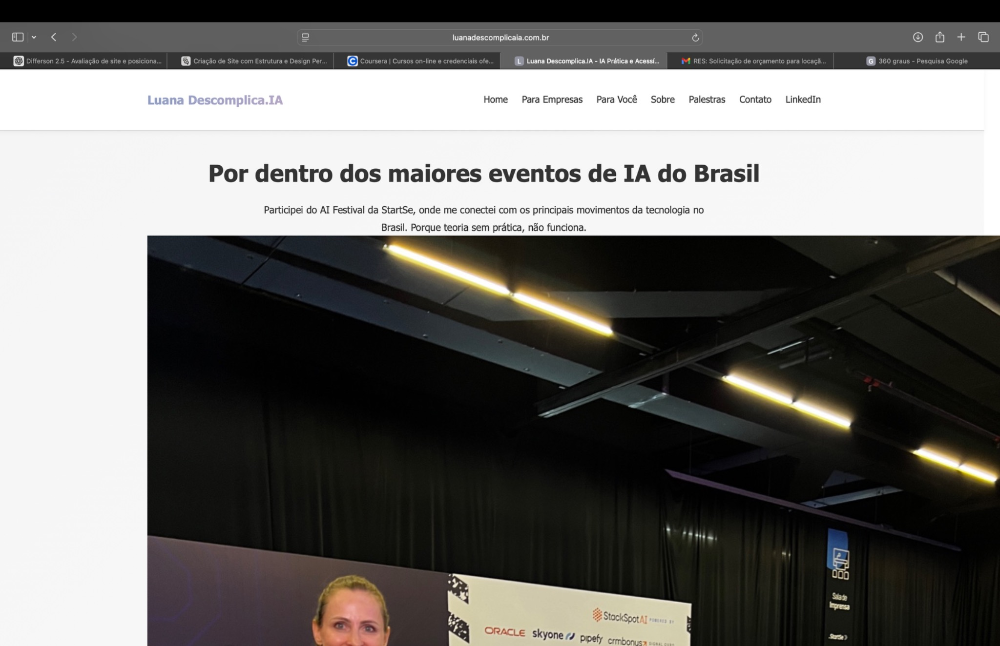
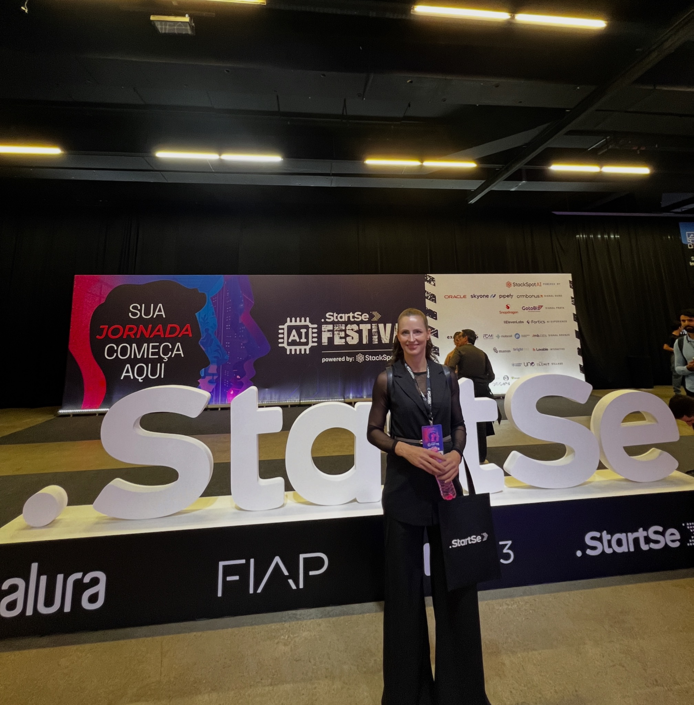

Clareza para decidir. Método para executar. Transformação com ROI.
Consultoria estratégica em IA para empresas que buscam eficiência real, com diagnóstico, priorização e implantação orientada por resultados.
Consultora de Inteligência Artificial aplicada à gestão

Administradora com MBA em Finanças pela Fundação Getulio Vargas, construí uma carreira de mais de 18 anos liderando áreas administrativas e financeiras em empresas de diversos setores - como construção civil, agronegócio, varejo e gestão pública.
Sempre atuei com foco em melhoria de processos, eficiência operacional, controle de indicadores e reorganização de fluxos. Coordenei equipes multidisciplinares, implementei sistemas de gestão (ERP), redesenhei procedimentos e conduzi apresentações de resultados diretamente ao conselho.
A partir dessa vivência prática - e da maturidade profissional que ela traz - compreendi que a Inteligência Artificial pode ser um divisor de águas nas empresas. Mas, para isso, precisa ser aplicada com critério, clareza e visão de negócio.
Foi assim que nasceu meu modelo de atuação:
Atuo de forma independente, sem vínculos com fornecedores, garantindo decisões isentas, estratégicas e orientadas por dados. Minha entrega é clara: consultoria de IA com visão de gestão.
Tecnologia é meio. O fim é eficiência, organização e resultado.
Transformar Inteligência Artificial em valor prático e mensurável, organizando processos, identificando oportunidades reais e conduzindo empresas com clareza, estratégia e independência técnica.
Construir um novo padrão de aplicação da IA no Brasil: estratégica, ética, orientada à gestão e com impacto real nos resultados das empresas.
Atuo como estrategista organizacional com foco em IA: analiso processos, priorizo oportunidades com retorno comprovado e acompanho a implantação. Meu papel não é vender tecnologia — é garantir que ela seja usada com inteligência. Entrego clareza, plano e direcionamento para que as empresas colham resultados mensuráveis, com estrutura e organização.
Soluções em IA com foco em gestão, clareza e resultado real
Seu diagnóstico prático e completo para começar com clareza.
Análise estruturada que revela gargalos, desperdícios, oportunidades de automação e fluxos de trabalho onde a IA gera impacto imediato. Mais do que uma fotografia: um plano de ação para 30, 60 e 90 dias.
Você recebe:
Antes da automação, vem a organização.
Acompanhamento estratégico para garantir que o plano vire entrega.
Após o Assessment, posso acompanhar a empresa como gestora da transformação com IA, alinhando o plano à execução real.
Você recebe:
Você lidera o negócio. Eu lidero a execução.
Evolução real exige ciclos de revisão e adaptação.
Ideal para empresas que querem otimizar processos e explorar novas oportunidades com IA de forma contínua.
Inclui:
Transformação é contínua, não pontual.
Formatos sob medida para lideranças, gestores e equipes técnicas ou administrativas.
Uma palestra prática e acessível para incorporar IA na cultura da empresa, aumentar a produtividade e garantir segurança e governança.
Temas mais procurados:
Conhecimento que gera ação.
Produtos individuais para profissionais que buscam clareza
Seu Novo Superpoder no Mundo Digital
O caminho descomplicado para dominar a Inteligência Artificial e otimizar cada área da sua vida, com leveza e resultados.
Você vai aprender:
Ideal para: líderes, tomadores de decisão ou quem quer se destacar.
Uma curadoria prática e comentada das ferramentas de IA que uso com frequência — com foco em produtividade, gestão e organização.
Em breve disponível com:
Em breve Notifique-me
Participei do AI Festival da StartSe, onde me conectei com os principais movimentos da tecnologia no Brasil. Porque teoria sem prática, não funciona.


Entre em contato comigo para conhecer melhor as soluções em IA e como posso ajudar você.
Campo Grande - MS
Atendo presencialmente e online